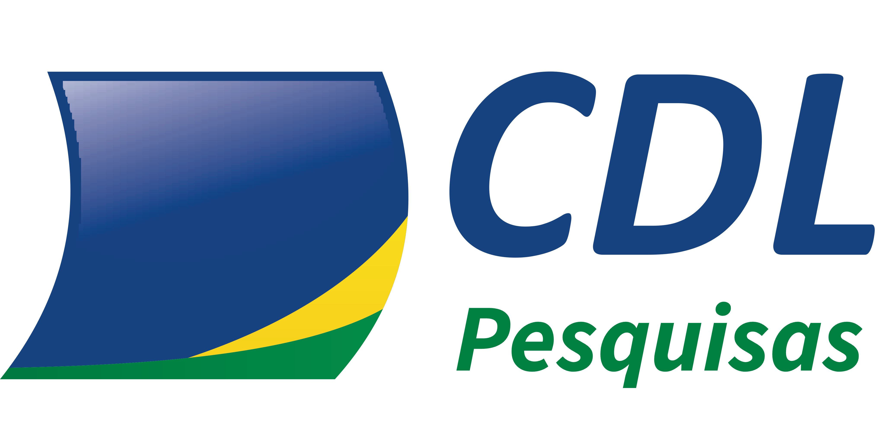

Uma pesquisa de intenção de voto com identidade verificada por CPF, apurada em tempo real e divulgada ao vivo no telejornal da TV Atalaia. Sua marca no centro do assunto que move o estado.
Eleição para Presidente, Governador, dois Senadores e as bancadas federal e estadual. É o ciclo mais disputado da década em Sergipe — e o de maior atenção do eleitor.
Nesse momento, um número confiável vira notícia. Ele é citado no rádio, reproduzido nos grupos, debatido na mesa do bar e cobrado dos candidatos. A marca que assina esse número entra na conversa junto.
CPFs já validados na base
Este é o ponto de partida, não a meta. A coleta é digital e gratuita para o respondente: sem entrevistador, o custo por resposta é praticamente zero. O limite deixa de ser orçamento e passa a ser adesão — por isso a meta de campo é de 200 mil respondentes.
| Amostra | Margem de erro | vs. instituto |
|---|---|---|
| 2.000 (Datafolha típico) | ±2,19 pp | — |
| 50.000 | ±0,44 pp | 5× mais preciso |
| 100.000 | ±0,31 pp | 7× mais preciso |
| 200.000 (meta) | ±0,22 pp | 10× mais preciso |
Intervalo de confiança de 95%. Margem calculada por 1,96 × √(0,25/n). Quanto menor a margem, mais perto o número divulgado está da realidade.
O ponto fraco de toda enquete digital é não saber quem respondeu. Aqui, quatro camadas resolvem isso antes do voto — e uma arquitetura de duas salas garante que, depois dele, ninguém consiga ligar o voto à pessoa.
Validado contra base própria de 44.545 CPFs ou consulta em tempo real ao SPC Brasil. Sem CPF válido, não entra.
Código de 6 dígitos enviado ao WhatsApp vinculado ao titular. Impede uso de CPF de terceiros.
Verificação anti-robô, limite por IP, teto de dispositivos e voto único por CPF garantido no banco.
Identidade e voto ficam em estruturas sem qualquer chave de ligação. Nem o operador consegue reunir os dois.
Código-fonte aberto para auditoria · Registro no PesqEle da Justiça Eleitoral · Conformidade com a Lei 9.504/97, a Resolução TSE 23.600/2019 e a LGPD
A pesquisa é exclusivamente espontânea. O eleitor digita o número do candidato, como fará na urna. Nenhuma lista de nomes é mostrada antes — só depois, para ele confirmar o que digitou.
Pesquisa estimulada mostra uma lista e pergunta em quem você votaria. Isso infla quem é conhecido e esconde quem o eleitor de fato lembra na hora. Aqui, o resultado é a memória real do eleitor — o mesmo esforço que ele fará na cabine.
| Item | Instituto tradicional | Sergipe 2026 |
|---|---|---|
| Tipo | Geralmente estimulada | Espontânea pura |
| Entrevistador | Sim (pode enviesar) | Nenhum |
| Identidade | Declarada | Verificada por CPF |
| Anonimato | Promessa operacional | Garantia técnica |
| Auditoria | Material arquivado | Código aberto |
Diferente de um anúncio visto uma vez, aqui a marca acompanha o eleitor da identificação ao encerramento — 5 a 6 telas por pessoa, multiplicadas por cada respondente.
Tela de identificação. Primeira impressão, com a faixa de patrocinadores no rodapé.
Cada cédula preenchida — Presidente, Governador, Senador, Deputados. A faixa está em todas.
Agradecimento e convite de compartilhamento, que leva a pesquisa — e a marca — adiante.
Página pública de resultados e apresentação ao vivo no telejornal da TV Atalaia.
Demonstração completa, tela a tela: pesquisa.cdlaju.com.br/patrocinio/jornada
A assinatura da pesquisa. Uma única empresa, com exclusividade na sua categoria — nenhum concorrente patrocina em nenhum nível.
É a cota que transforma patrocínio em posicionamento: a marca deixa de estar na pesquisa e passa a ser reconhecida como quem a viabilizou.
Encaixe automático preservando proporção — qualquer formato cabe.
| Entrega | Oferecimento R$ 100 mil |
Patrocínio R$ 70 mil |
Apoio R$ 30 mil |
|---|---|---|---|
| Logo na jornada do eleitor (todas as telas) | ● | ● | ● |
| Logo na página pública de resultados | ● | ● | ● |
| Relatório premium com cortes demográficos | ● | ● | ● |
| Reunião de apresentação dos resultados | ● | ● | ● |
| Menção na reportagem da TV Atalaia | ● | ● | — |
| Reunião com o estatístico responsável | ● | ● | — |
| Painel dedicado nos créditos de abertura da TV | ● | — | — |
| Exclusividade de categoria | ● | — | — |
| Entrevista exclusiva do Presidente da CDL | ● | — | — |
| Análise customizada do seu segmento | ● | — | — |
| Quando | O quê |
|---|---|
| Até 5 dias antes | Registro da pesquisa no PesqEle da Justiça Eleitoral |
| Setembro | Coleta de campo — online, nos 75 municípios |
| Véspera | Números entregues ao patrocinador Oferecimento, sob sigilo |
| Dia da divulgação | Apresentação ao vivo no telejornal da TV Atalaia |
| Em seguida | Publicação no portal público de resultados |
| Até 3 dias úteis | Relatório complementar aos patrocinadores |
O patrocínio é estritamente institucional e não eleitoral. Não confere ao patrocinador qualquer ingerência sobre metodologia, contratação da equipe, resultados divulgados ou edição da reportagem. A relação de patrocinadores é informada à Justiça Eleitoral no registro e divulgada publicamente.
Por política de due diligence eleitoral, não aceitamos recursos de candidatos, partidos e seus diretórios, pessoas filiadas com candidatura ativa, empresas controladas por candidato ou partido, e órgãos da administração pública. Toda proposta passa por verificação prévia.
A cota Oferecimento é única e a exclusividade é por categoria — o primeiro a formalizar bloqueia o segmento inteiro. Retornamos em até dois dias úteis com o contrato de patrocínio para análise jurídica.
presidencia@cdlaju.com.br
(79) 3212-7700
pesquisa.cdlaju.com.br/patrocinio
Câmara de Dirigentes Lojistas de Aracaju
CNPJ 13.045.935/0001-36
Rua Santa Luzia, 570 · São José · Aracaju/SE